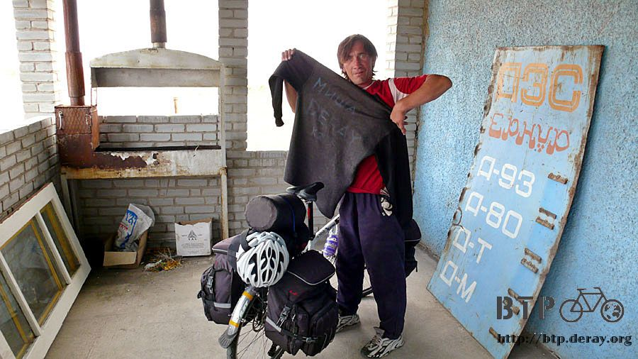
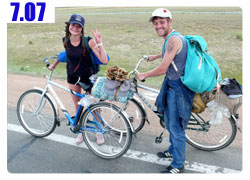

友誼帶著走
不知道是不是為了配合我出發的時間，婆婆和小女兒莎爾坦娜很早就起床了，那時候我還正準備拿著毛巾去洗臉，帳棚都還沒收呢。
跟婆婆說聲早安，說出口才發現脫口而出的是中文，大概是太令人溫馨放鬆，覺得這裡像家一樣，都忘了自己在國外。
早餐在這裡喝了熱奶茶，另外也喝了一杯熱咖啡，配著麵包，簡單但是很好吃。
莎爾坦娜忙進忙出的拿一堆餅乾放在桌上，說是婆婆要讓我帶在路上吃的。
這些餅乾我之前都有在餐廳的桌上，或是自己有在雜貨店買來吃過，並不怎麼便宜的說，總計一共拿了四包不同口味的餅乾給我。
早餐的熱飲和麵包，以及婆婆給我的餅乾，她們都不跟我收錢，手裡拿著一張薄薄的兩百元，就偷偷的拿給莎爾坦娜當零用錢。

臨走前莎爾坦娜一直跟我說『拉半米』『拉半米』，新單字、沒聽過，她指了指脖子上的項鍊和手上的手鍊。
是要交換紀念品的意思嗎？
想起在科帕住了一晚上，隔天要走的時候，蓋維迪安也說著『紀念品』的英文，然後給我一張他找工作的求職履歷表。
看著履歷表的專長欄還寫著WORD、EXCEL，我到哈薩克之後還沒見過手上這一台之外的電腦呢，雖然有點一頭霧水，但還是收下了履歷表當紀念品。
既然要交換紀念品的話，那我就把在中國烏魯木齊買的琥珀手鍊送給妳吧。
我覺得『拉半米』應該不是交換紀念品的意思，因為莎爾坦娜拿到手鍊之後，就跑回房子裡跟婆婆說她跟我講『拉半米』，但是我給她一條手鍊。
也許語言不通也是一件好事，因為誤會而衍生出的，也有可能是溫馨的好事。
而且雖然我不懂哈薩克文，但是不要一直想著自己聽不懂這件事情，當別人在跟我說話的時候，
雖然聽不懂，但是用心的看著對方的肢體動作、眼神、口氣，其實往往都能猜到對方想要表達的意思，不要太快就否定自己的溝通能力。
莎爾坦娜從屋子裡跑回來，給我一條勾勾牌的黑色護腕，戴在本來是戴琥珀手鍊的右手上，而莎爾坦娜的左手則戴著交換來的禮物。
好不容易終於拍到婆婆的照片了，年紀比較大的人好像對拍照都很害羞，多虧莎爾坦娜幫我拉著婆婆才有辦法拍到照片。

揮過手跟大家道別，剛騎不到一百公尺，就覺得怎麼太陽那麼大，陽光好刺眼，遮陽的帽子怎麼沒發揮功能呢？
這才發現帽子似乎忘了帶了，掉過頭繞回婆婆的家，探頭往裡面看，找尋帽子的蹤影，婆婆問我在找什麼？
我比了比頭上，說帽子好像給忘在這裡了，一摸到頭的時候，才發現帽子正好好的戴在頭上，根本就沒有掉。
有點不好意思，一大早就耍白癡，重新說一次掰掰，這次真的要出發了。
因為現在是往北騎，太陽早上在右邊、下午在左邊，帽子都要隨著陽光的角度戴成斜的，不然什麼陽光也擋不到。
又因為戴成斜的關係，老是被風給吹跑，整天都在停車回頭撿帽子，每撿一次就休息喝口水，撿帽子變成休息的代表意義。
不要覺得帽子戴在頭上還以為弄丟是很蠢的事情，還有更蠢的，早上整理包包的時候，發現橘色的雨衣不見了，翻遍包包怎麼也找不到。
最後一次穿雨衣的時候是在離開烏魯木齊時的大雨，最後一次大規模整理背包則是在邊界的霍爾果斯，那時候確定還有看到呀。
怎麼騎了幾天的車之後雨衣居然離奇的失蹤了？
東西真的都是不見之後才會發現它的價值，之前就算是下雨我也懶得穿雨衣。
接下來如果下大雨的話，就連想穿也沒的穿了，希望到時候有地方能讓我躲雨，同時也保佑接下來還有一百天的旅行，不要下大雨。
在婆婆家睡了大頭覺，從下午睡到晚上，吃飽之後，晚上又睡到早上，精神跟體力都為之一振！
再也沒有這麼好過的感覺了。
跨上單車的時候就想說今天要騎它個一百五十公里，往首都的方向大步邁進，看能不能早一點抵達。
一路上的景色依然是那個樣子，就一條馬路起起伏伏，配上兩旁的荒涼草原，天天都這樣子看，久了也就習慣了。
景色沒什麼變化，但是路面的水準有點降低，工人們在路上還有白色的道路號誌上都塗滿了柏油，有些被烈日曬得融化了。
這些柏油非常會黏輪胎，讓我不得不騎到馬路中間閃避滿地的柏油，遇到後方有大貨車要經過的時候再讓它們先走。

這些工人在施工的時候一定很無聊，除了滿地亂塗的柏油之外，沿路上也都是工人用柏油在作畫的圖案。
裸女圖、卍字圖、奇怪的標語、好笑的動物等等，簡直是在馬路上開小孩子的畫展。

路上經過幾棟房子，因為水還有，出發前才在婆婆家又買了一瓶芬達路上慢慢喝，水壺也都是裝的滿滿的，所以沒有停下來光顧。
看到一位牽著駱駝的少年勇敢的攔下大貨車，不太可能是要牽著駱駝搭便車吧？賣駱駝給卡車司機？
這個標誌很有意思，它的意思是說：
『如果你的車壞在荒野之中，或是發生什麼緊急事情需要救助的話，不用擔心唷！因為在七十公里之外就有電話可以用了。』
七十公里之外才有一具電話？
不如直接把這個標是換成神愛世人或是阿彌陀佛直接來普渡眾生比較快一點。
接近中午的時後拆了一包花生口味的夾心酥來吃，把汽水喝光光，就打發掉午餐，加足馬力向前進。
下午一點的時候稍微感到疲憊，適當的時機和地點剛好就出現了一間加油站旁邊還有餐廳。

這不僅僅是如照片中所拍攝的那個樣子，從我的眼睛看出去，這個畫面已經是生命的中繼站，讓旅途得以延續的重要補給處所。
在加油站旁邊的餐廳裡買了一瓶二公升裝的水蜜桃冰紅茶，猛灌了幾口，加上餐廳裡有開冷氣，突然覺得身體好冷~_~
明明是炎熱的天，突然走進有冷氣的地方，又狂灌冰飲料，身體有點適應不過來，走回外面曬一下太陽，吹著溫溫的風，調節一下體溫。
在餐廳裡面休息了好長的時間，主要是在充電並且整理前兩天的遊記，這時候腦袋恢復正常，可以理性一點的講故事。
午餐跟店員們一起吃，大概看我是亞洲人，覺得我完全不會講哈薩克話，所以就端著一盤有食物的盤子在我面前，做出吃東西的樣子，問我要不要吃？
真是簡單明瞭的肢體語言，要是我可以隨身攜帶一盤有食物的盤子，那旅行世界各地都不成問題啦。
吃著有點像是咖哩口味的燉馬鈴薯，裡面還有麵粉糰、洋蔥、胡蘿蔔等，還蠻好吃的，因為很鹹，真想配著白飯吃。
但這邊只有麵包可以配，配上熱奶茶和冰的水果茶，這樣也是很豐盛的一餐。

吃飽飯，遊記也整理完畢，準備繼續上路，一出餐廳門口，就遇到隔壁修車廠的員工，知道我是台灣人，又騎自行車旅行，他整個人變得很興奮，
叫我等一下，先別走，他去拿點東西給我，心裡想『難道又要交換紀念品了嗎？』我沒帶太多可以跟人家交換的東西呢。
這個員工很快就回來，手裡拿著一件長袖黑色的上衣，和一小截藍色的粉筆，在衣服上寫下自己的名字『米散』。
然後將粉筆遞給我，換我在上面寫自己的名字，我跟著塗塗抹抹的寫上『德瑞』
最下面則寫著『KZ』，表示哈薩克的意思。
這樣一件有著兩個人簽名的衣服就完工啦，我以為米散是要拿回去當紀念，結果他將衣服披在我的背上，然後用袖子在胸口打了一個結。
衣服是要送給我的，他希望我可以帶著這件衣服一直騎下去，不要忘記哈薩克人的友情。

餐廳的員工則從冰箱裡拿出兩瓶一點五公升裝的汽泡礦泉水，說要送給我，付錢給他們硬是不肯收。
但因為行李裝不下，所以只拿了一瓶水，接著他們又拿了一大片紙包裝、看起來很貴的巧克力給我，欣然收下。
哈薩克人大多很友善的，真慶幸我碰到百分之九十九點九的都是好人，唯一不好的，可能是因為他的精神真的有異常，他自己也不願意這樣，
既然事情都已經過去了，就不要將它放在心上，反正手機已經拿回來，物質上來說我並沒有任何的損失。
行李中越來越多哈薩克人的友情，從到哈薩克第一天就被好心人帶回家裡住，不論我在哪邊露營都不會被趕走，
每天晚上都能夠找到平安的住宿場所，當地人也很歡迎我留宿一晚，包包裡的帽子、簽了名的上衣、可以果腹充飢的餅乾、巧克力、飲水，
雖然我不了解這個國家，但是待久了之後漸漸發現，荒涼的地形並沒有讓人心跟著冷漠，
城鎮之間遙遠的距離反而讓彼此的關係更緊密，和都市叢林擠滿了人卻互相冷漠以對，形成強烈的對比。
也許位在中亞的哈薩克，不如歐洲那麼富麗繁華，也不如中國那麼喧鬧精彩，但是這塊土地上的人民用自己的方式在生活著。
我只是一個外人，在不了解別人文化背景的前提下，老是批評別人的房子很破舊、看起來很窮之類的，實在是很幼稚的行為。
披著黑色上衣，兩個國家人的名字，繫在胸口的衣結，好像有什麼東西因為這件衣服而連繫起來了。
或是我終於在哈薩克待了十多天之後，才真的放下了成見，去體會哈薩克的文化。
離開餐廳之後我都在想著這件事情，並且回顧從進入哈薩克以來發生的每件事，換個不同的角度，事情都有不同的看法。
在中國，會有人對來買飲料的陌生旅行者熱心留宿他過夜嗎？
在歐洲，會有店家允許陌生人在自己的屋簷下搭帳篷睡覺嗎？
在世界各地，有什麼民族隨時都是友善的給予協助，臉上不帶著一絲嫌惡或是自傲的表情？
在哈薩克，這都是每一天我親身經歷到的事情，而我老是在忙著揮舞蒼蠅，而忽略了更重要的感受。
今天本來想一口氣騎個一百五十公里，但在餐廳休息的有點久，離開時已經將近五點，牛都在路邊排排站吃草。
本來想騎那麼遠是為了證明自己的體力恢復了，就趁機趕個路，但問題是我的行程又不趕，騎那麼快要幹嘛？

前方的告示牌說往下一個城鎮還要九十幾公里，今天騎過去太勉強了，而且看衛星地圖，往前似乎要進入爬山的地形。
掉頭走回鎮上，剛剛在路邊有看到不起眼的旅館兼餐廳的招牌，打算過去問一下價錢，如果便宜的話今天就住下來吧。
價錢一問真是令人嚇一大跳，請店員用計算機打出數字，確認這不是休息一小時，而是睡一個晚上的價錢。
居然只要四百塊而已，未免低的也太誇張了一點，阿拉木圖三十幾公里外的郊區，旅館一晚上還要價兩千五，
首都阿斯塔那最便宜的旅館也要將近一萬元，這裡居然只要四百塊？
根本就是挖到寶的超低價旅館，從門外卸下包包，分批拿進旅館裡，房間是四人床，但是只有我一個人睡，床鋪是那種超軟彈簧床。

外表看起來是個破破的旅館，連招牌都用油漆寫在一個小木板上而已，但是裡面豪華的令人驚訝。
我最需要的洗澡浴室，裡面還有超深的浴池、冒著蒸氣的三溫暖等，光是浴室就比整間餐廳還要大了。
有錢弄這麼好的設施怎麼不把招牌做的閃亮一點呢~_~
開心的洗過熱水澡，髒衣服也能好好的泡熱水消毒處理一下，保持身體乾淨對長期旅行可是很重要呀～
我是旅行者，可不是流浪漢。
還有兩個星期可以待在哈薩克旅行，之前曾經一度想要早一點離開這個國家，換了心境之後，我想接下來的路和視野都會不一樣。
繼續閱讀：7.7 我們要去游泳

哈薩克-堅戈－ 1：0.26 台幣
7.6 |
總計：1350元 |
早餐熱奶茶、熱咖啡、麵包、兩包餅乾、兩包脆麵200元、芬達200元、水蜜桃冰紅茶250元、午餐300元、旅館400元 |
|